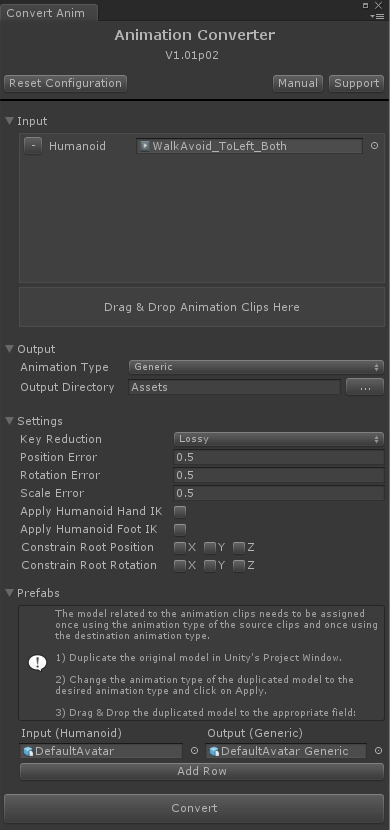

User Interface
In order to open the Animation Converter Window, navigate to Unity's Menu Bar and click on Window --> Animation Converter.
|

Animation Converter - Editor Window |
Animation Converter WindowFor converting animations provide all the information requested by the Animation Converter Window. Each input field has a helping tooltip (hover over the text label). Errors are displayed immediately below the corresponding input field. Please note that the source code of the window is included in this package (see C# Scripting API). Feel free to adapt it to your needs. InputDrag & Drop all clips that should be converted from Unity's Project Window onto the appropriate field of the Animation Converter Window. All clips need to be of the same animation type. Tip: Select multiple files in Unity's Project Window to drag&drop them at once to save time. It's also possible to drag & drop 3D model files (e.g. *.fbx) to add all animations included in that file. OutputSelect the animation type the clips should be converted to. It's also necessary to select a directory where the converted clips should be stored at. Attention: If the desired output directory doesn't exist yet, create it inside Unity's Project Window. Empty folders that are created outside of Unity (or within the "Open Folder Dialog") are usually not recognized by Unity. SettingsThe settings are different depending on the conversion that should be performed:
PrefabsIt is necessary to assign the prefabs related to the animations that should be converted. It is recommended to directly use the prefab of the model (e.g. the *.fbx file). The Input prefab needs to be the same model as the animations have been created for. Additionally it needs to be configured in the same animation type as the animations that should be converted. For the Output prefab it's necessary to follow the instructions shown in the UI. Duplicate the model (e.g. the *.fbx file) and configure the duplicated model to the same animation type as to which the animations should be converted to. Assign the duplicated model as Output prefab. By clicking on Add Row it is possible to add multiple Input/Output prefab pairs. This is useful when converting (retargeting) humanoid animation clips so that they can be used by multiple generic/legacy models. Therefore it is necessary to add a source and destination prefab for each 3D model that will use the animation clips. The converter will then create one animation clip for each 3D model. ConvertIf everything was setup correctly the conversion starts when clicking on Convert. A log window is displayed after the conversion finished. |